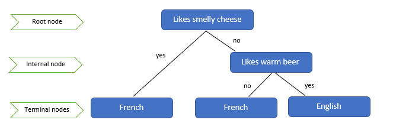
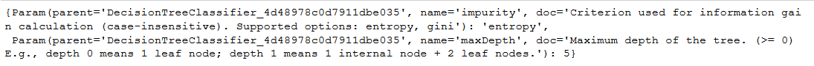

Decision Trees¶
A decision tree is an intuitive machine learning model that can be represented as a diagram showing sequential decisions and their possible outcomes. For example, we could split a group of adults firstly by gender, then by age and finally by food preferences in order to segment a target population for marketing purposes. Even though this model breaks down a population into subgroups it can be used for both classification and regression tasks.
Theory¶
The following image is of a binary classification tree deciding if an individual is French or English. The tree is `binary’ because at each node is split into only two sub-samples. There are three types of nodes: root, internal and terminal. The root node is the first node and it includes a decision rule or a splitting condition. The subsequent nodes, which also include a decision rule, are called internal nodes. The final nodes giving the resulting decision, that do not lead on to subsequent splits, are called terminal or leaf nodes. The lines joining the nodes can either be called edges or branches.
{kind=link}
Machine learning is used to create the best decision tree for a predetermined outcome. The decision tree tells us which variables are important and what splitting rules we should apply. This allows us to better understand our data and is therefore useful for data exploration. The model can then be used to predict the class or value for new examples which have not yet been labelled. More generally, this type of machine learning model is a supervised learning technique. As opposed to unsupervised learning, where we do not have a predetermined expected outcome.
The learning process tries and tests different splitting conditions. For each decision node it chooses the split which gives the best quality partition. The main considerations for decision tree learning are the choice of splitting criterion, whether there are binary or multiple splits at each node and the ideal size of the tree (Rakotomalala). Decision trees can be used for both classification and regression problems. The difference being the criterion used to evaluate the quality of the split. Splitting criterion can be based on impurity minimisation, information gain or other statistical measures. Common splitting criteria are the Gini index and information gain for classification and the sum squared error or variants for regression.
If stopping rules are not implemented, the dataset will continue to be split into subgroups until there is only a single example in each node. However, this would be a case of severe overfitting and so stopping rules are used to limit the tree size. It is preferred to lose some accuracy in order to have a more general model which can then be applied to newly introduced examples. Tree size can also be controlled using pruning which involves reducing a tree to a sub-tree after the learning process has been completed.
Decision trees have several advantages over other machine learning algorithms. A major advantage, especially in a business context, is that they are easily understood as opposed to `black box’ methods, such as artificial neural networks, where we are incapable of explaining exactly how the results have been derived. Other advantages are the fact that decision trees are easy to implement and are computationally cheap. Decision trees are also suitable for a wide range of datasets. They do not make assumptions about the population distribution, handle heterogeneous data as well as missing values.
Examples of machine learning algorithms available to implement decision trees are:
AID (Automatic Interaction Dectection), THAID (THeta AID) and
CHAID (Chi-squared AID)
CART (Classification and Regression Trees)
ID3 (Iterative Dichotomiser 3) and its successors C4.5 & C5.0
MARS (Multivariate Adaptive Regression Splines)
Conditional Inference Trees
The C5.0 algorithm is implemented in R by the C50 package while the CART model is implemented by the rpart package. In Python the CART model is implemented by the scikit-learn library. Spark’s machine learning library MLlib implements a mixed ID3 and CART variant.
CART Model¶
The CART model was introduced by Brieman, Freidman, Olshen, and Stone in 1984. It is a form of greedy, top-down, binary recursive partitioning which incorporates various stopping techniques as well as post-build pruning. The CART model also handles missing values by surrogating tests to approximate outcomes. The original model offered a choice of the Gini and Twoing criteria to measure split quality. However, libraries such as those in R and Python implement the Gini index and an information gain criterion based on entropy. For regression trees the splitting criterion is the residual sum of squares.
The Gini index, used in classification, provides an evaluation of the node’s impurity. If \(p_i\) is the proportion of examples labelled with class \(i\) grouped in a node then:
The minimum value is zero which is when all examples in the node have the same class. So, for a given choice of splits, the best split gives the smallest value for the Gini index.
Stopping rules stop the growth of the tree to minimise overfitting. The following stopping rules are used by the CART algorithm (IBM): * Stop if a node is pure i.e. if all examples in the node are identical. * Stop if all examples in the node have identical values for the remaining splitting predictors not already used. * Stop once the user-specified maximum tree depth limit has been reached. * Stop if the splitting the node would result in a child node which is smaller than the user-specified minimum node size value. * Stop if the improvement in the quality criterion is smaller than the user-specified value.
As well as stopping rules being implemented to control tree size, the CART algorithm uses cost-complexity pruning to reduce the final tree size. The cost-complexity measure is defined as (PSU):
Where \(\vert T^* \vert\) is the complexity or number of leaf nodes for tree \(T\), \(\alpha \geqslant 0\) is a real number and \(R(T)\) the misclassification rate. A bigger tree will have a lower misclassification rate but a higher complexity value due to more nodes. The complexity parameter, \(\alpha\), adjusts for the level of importance we put on the complexity or size of the tree. The idea is to choose the sub-tree which minimises \(R_\alpha(T)\).
C5.0¶
The C5.0 algorithm by Ross Quinlin (1994) creates decision trees for classification only and is also known as a statistical classifier. However, it does allow multi-branch splits as opposed to just the binary splits implemented by the CART algorithm. The splitting criterion used is information gain (entropy) and pruning is down by the Binomial Confidence Limit method. Finally, C5.0 gives a choice of treatments for missing values: either estimating the value as a function of of other attributes or apportioning the case statistically among the results (Nguyen).
Binomial confidence level pruning involves calculating binary confidence intervals for each node in the tree. In each node, we have N indivduals of which E of them do not belong to the most frequent class. The error rate for this node is then the upper limit of the binary confidence interval for E events being observed in N trials. Pruning is then applied starting at the leaf nodes and working back to the root node. For each leaf, its estimated error is N times the previously calculated binomial error rate. While the error rate of a subtree is the sum of the estimated errors of its branches. If the error rate of the subtree is higher than that of its root node than it is pruned. Similarly, if the error rate of one of the branches is lower than that of the subtree than the subtree is replaced by this branch (Wu et al.).
Information gain is calculated using the entropy, a measure of disorderedness (Fürnkranz). If \(S\) is a set of examples and \(p_i\) is the proportion of examples that belong to class \(i\) then the entropy is:
When an attribute, \(A\), splits the set into subsets, \(S_i\), then the information gain for attribute \(A\) is:
Code¶
I’ve recently started coding in PySpark so I thought I’d present a PySpark decision tree implementation. I’m working in Jupyter notebook with Python 3.0 and Spark 2.1. I chose version 2.1 because I use 2.0 at work but Python 3.0 requires minimum 2.1 and I didn’t want to reinstall Python. I used Anaconda to install Jupyter a while back and so I just needed to install the Spark components. I’m using Windows 10 and have been able to system paths working even though I’ve tried several solutions so I have to declare the follwing at the start of my session along with the usual need to define the Spark context.
import os
import sys
spark_path = "LOCATION OF SPARK FILES ON YOUR PC"
os.environ['SPARK_HOME'] = spark_path
os.environ['HADOOP_HOME'] = spark_path
sys.path.append(spark_path + "/bin")
sys.path.append(spark_path + "/python")
sys.path.append(spark_path + "/python/pyspark/")
sys.path.append(spark_path + "/python/lib")
sys.path.append(spark_path + "/python/lib/pyspark.zip")
sys.path.append(spark_path + "/python/lib/py4j-0.10.4-src.zip") # exact file name depends on the version you downloaded
from pyspark import SparkContext
from pyspark import SparkConf
sc = SparkContext("local", "test")
from pyspark.sql import SQLContext
sqlc = SQLContext(sc)
The dataset can be downloaded from : https://archive.ics.uci.edu/ml/datasets/Wine. It’s a classification problem with 3 classes representing 3 wine producing regions and 13 variables representing chemical analyses of the wines. It’s a very easy classification problem so you will see that we have good accuracy levels.
To load the data:
#Import the data
df = sqlc.read.format('com.databricks.spark.csv').options(header='false', inferschema='true').load('data_wine.txt')
df=df.withColumnRenamed('_c0','label')
The first column which represents the regions is renamed to “label” so that the algorithm instantly recognises that this is the variable that we want to model.
The dataset hasn’t got any other categorical values in it so the next bit of code just adds a variable which we’ll later recode with stringIndexer works. Strings are not handled by the machine learning alogrithms so we have to translate them to numerical categories. Clearly I could have created assigned numerical categories in the first place but the point is to use stringIndexer.
# Create a new variable
from pyspark.sql.functions import udf,col
from pyspark.sql.types import StringType
# Define the rule for the new variable
def indicator(col1, col2):
if col1>col2:
return 'Y'
else:
return 'N'
# Create a function using udf which allows us to pass columns as an input. It's impossible to loop over rows in a Spark dataframe.
function = udf(indicator, StringType())
# Finally create the column.
df = df.withColumn('_c14',function(col('_c6'), col('_c7')))
df.show(5)
You will see an extra column called ’_c14’ has been added with entries of ‘N’ and ‘Y’. Next these strings need to be replaced.
from pyspark.ml.feature import StringIndexer
#Create the indexer
indexer = StringIndexer(inputCol="_c14", outputCol="_c14Cat")
#Apply the indexer and drop the column containg strings at the same time.
df = indexer.fit(df).transform(df).drop("_c14")
df.show(5)
You will see that we have now replaced the column of strings by ones and zeros.
Finally we want to put the data into a form that can be handled by the algorithm. Here all the explanatory variables are grouped into a single column called “features”.
from pyspark.ml.feature import VectorAssembler
df=(VectorAssembler(inputCols=df.schema.names[1:], outputCol="features")
.transform(df)).select('label','features')
df.show(5)
{kind=link}
If instead of using show() to display the dataframe, we use take() you can see what it really looks like.
df.take(2)
{kind=link}
So you can see that we have the features or explanatory variables stored as “dense vectors”.
Finally we need to indicate which variables are categorical. In our case there is only one categorical variable which is the last column that we just created. However, as long as we indicate the maximum number or classes for our categorical variables, in our case 2, then the vector indexer will actomatically identify the categorical features.
from pyspark.ml.feature import VectorIndexer
df=VectorIndexer(inputCol="features", outputCol="indexedFeatures", maxCategories=2).fit(df).transform(df)
We have now added another column “indexedFeatures” and it is this column that we will input into the model. Now we are ready to do the modelisation.
from pyspark.ml.classification import DecisionTreeClassifier
from pyspark.ml.evaluation import MulticlassClassificationEvaluator
# Split the data into train and test
(trainingData, testData) = df.randomSplit([0.7, 0.3])
# Create the trainer and set its parameters
dt = DecisionTreeClassifier(labelCol="label",featuresCol="indexedFeatures")
# Train the model
model= dt.fit(trainingData)
# Compute accuracy on the test set
predictions = model.transform(testData)
predictions.select("prediction","label","features").show(3)
# Select (prediction, true label) and compute test error
evaluator = MulticlassClassificationEvaluator(
labelCol="label", predictionCol="prediction", metricName="accuracy")
accuracy = evaluator.evaluate(predictions)
print("Accuracy = %g " % accuracy)
I re-ran the code several times getting between 79% and 96% accuracy depending on the random sampling for the training and testing datasets. I kept a difficult to model split which gave only 80% accuracy and then went on to tune the model for it to see if the accuracy could be improved for this split.
Firstly a parameter grid is created for the different choices we want to test. I decided to test different try depths and different split quality measures.
# Tuning
from pyspark.ml.tuning import ParamGridBuilder, CrossValidator
# Create the grid with parameters for maxDepth and impurity
grid = ParamGridBuilder()\
.addGrid(dt.maxDepth,[2,5,10])\
.addGrid(dt.impurity,['gini','entropy'])\
.build()
# Create the evaluator which defines how we measure accuracy
evaluator = MulticlassClassificationEvaluator(
labelCol="label", predictionCol="prediction", metricName="accuracy")
# Create the trainer
cv=CrossValidator(estimator= dt
, estimatorParamMaps=grid, evaluator=evaluator, numFolds=5)
# Train the model
cvModel = cv.fit(trainingData)
#Get the accuracy of the best model
evaluator.evaluate(cvModel.transform(testData))
This improved accuracy to 0.85. If you want to see the details for each of the models you can do the following.
list(zip(cvModel.avgMetrics, grid))
The average metric is the average accuracy for the 5 models built for each parameter set, 5 being the numFolds parameter for the cross-fold validation.
Now we extract the parameters for the best model.
import numpy as np
cvModel.getEstimatorParamMaps()[ np.argmax(cvModel.avgMetrics) ]
The image shows up too small to read but if you click on, a readable version will open.
{kind=link}
Finally we look at the model produced by these parameters.
cvModel.bestModel.toDebugString
{kind=link}
References¶
R. Rakotomalala. Decision tree learning algorithms. http://eric.univlyon2. fr/ ricco/cours/slides/en/Methodes_arbres_decision_cart_chaid_c45.pdf.